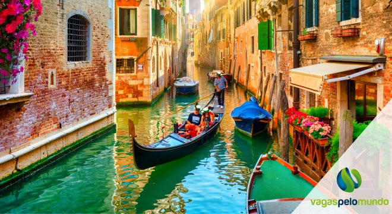
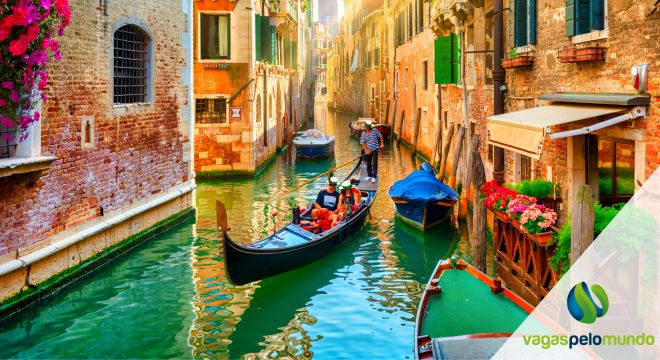

Veja algumas imagens de Veneza abaixo:
Dentro deste quarto um outro quarto
Com um Carpaccio nas ruas de Veneza
Segunda imagem sussurro de surpresa
E um pouco assim são as ruas de Veneza
Em fundo glauco de laguna ou vidro
E um pouco assim em nossa vida o duplo
Espelho sem perdão do não vivido
Caminha destinado a ser perdido